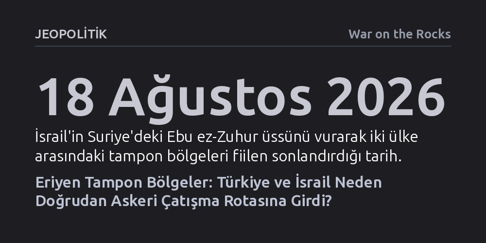

JEOPOLITIK · War on the Rocks · 2026-09-07
Esad rejiminin çöküşüyle Suriye'deki jeopolitik tampon bölgelerin ortadan kalkması, Türkiye'nin merkezi bir devlet inşasını hedefleyen güvenlik mimarisi ile İsrail'in bölünmüş ve zayıf bir çevre arayışını doğrudan karşı karşıya getirdi. İsrail'in Ebu ez-Zuhur hava üssünü vurması, iki ülke arasındaki rekabetin diplomatik söz düellosunu aşıp karada, Doğu Akdeniz'de ve istihbarat sahasında doğrudan askeri yüzleşmeye evrildiğini kanıtlıyor. Washington'ın Şam'ı terör listesinden çıkararak Türkiye'nin istikrar vizyonuna yaklaşması İsrail'in anlatısını boşa düşürürken, iki ordu arasında sıcak bir savaşı önlemek Batı'nın yeni bir bölgesel çatışmasızlık mimarisi kurmasına bağlı.
Türkiye ile İsrail arasındaki gerilimin iç politikaya dönük geçici bir laf dalaşı olmadığını; Suriye, Doğu Akdeniz ve istihbarat sahasında tamponların erimesiyle iki konvansiyonel ordunun doğrudan askeri çarpışma rotasına girdiğini gösterir.

18 Ağustos 2026 tarihinde İsrail savaş uçaklarının Suriye'deki Ebu ez-Zuhur hava üssünü vurması, Ortadoğu'da uzun süredir kabul gören jeopolitik varsayımların fiilen çöktüğünü gösterdi. Bu hava harekâtı sıradan bir sınır ötesi operasyon değildi; İsrail ilk kez Türk Silahlı Kuvvetleri'nin yerel güvenlik kapasitesi inşa etmeye çalıştığı stratejik bir etki alanını doğrudan hedef aldı. Esad rejiminin devrilmesinin ardından oluşan güç boşluğunu hızla dolduran Türkiye, askeri ve istihbari varlığını güneye doğru genişleterek Levant bölgesinin yeni güvenlik mimarisinde kurucu bir aktör haline gelmişti. İsrail ise gerçekleştirdiği bu saldırıyla hem Ankara'ya hem de Şam'daki yeni yönetime sahada yeni angajman sınırları dayatmayı amaçladı.
İsrail güvenlik bürokrasisi, bu hamleyle Suriye Cumhurbaşkanı Ahmed eş-Şara'ya çok net bir mesaj iletti: İsrail'in çıkarlarını tehdit eden bir Türk askeri varlığına kesinlikle göz yumulmayacaktı. Bu saldırı, İsrail stratejik aklında uzun süredir şekillenen bir yaklaşımın sahada operasyonel gerçekliğe dönüştüğünü tescilledi: "Türkiye yeni İran'dır." Yıllardır Washington ve Avrupa başkentlerindeki pek çok analist, Türkiye ile İsrail arasındaki gerilimin iç kamuoylarını konsolide etmeye yarayan karşılıklı bir söz düellosundan ibaret olduğunu savunuyordu. Ebu ez-Zuhur üssünden yükselen dumanlar, bu iyimser bakış açısının tamamen geçersiz kaldığını gözler önüne serdi.
Artık iki ülke arasındaki krizlerin sadece diplomatik nota teatileriyle yönetilebileceği dönem kapandı. On yıllar boyunca Türkiye ile İsrail arasında fiziksel ve jeopolitik bir bariyer işlevi gören geleneksel tampon bölgelerin çöküşü, iki ülkenin savunma mekanizmalarını doğrudan çatışma rotasına soktu. Ankara da salt diplomatik kınamalarla yetinmeyip İsrail'in önleyici askeri müdahalelerine karşı sahada somut bir caydırıcılık stratejisi inşa etmeye başladı. Karada, Doğu Akdeniz'de ve istihbarat alanında hızla daralan tampon alanlar, iki bölgesel gücü doğrudan karşı karşıya getiren yapısal bir askeri hesaplaşmaya dönüştü.
Suriye sahası, Türkiye ile İsrail arasındaki yapısal uyuşmazlığın en somut laboratuvarı haline geldi. İsrail'in bu denli sert ve hızlı tepki vermesinin arkasında savunma bürokrasisini sarsan derin stratejik kaygılar yatıyor. İsrailli planlamacılar, Suriye'nin yeni jeopolitik görünümünde ciddi kırılganlıklar görüyor; Şam'daki yeni hükümeti oluşturan bazı grupların geçmişi ve niyetleri Tel Aviv'de tedirginlik yaratıyor. Dahası Golan sınırının güvenliğini sağlama, güneydeki Dürzi nüfus dengelerini yönetme ve Hizbullah'a gidebilecek ikmal hatlarını kesmek için Suriye hava sahasında mutlak hareket serbestisini koruma arzusu, İsrail'in vazgeçilmez öncelikleri arasında bulunuyor. Türk Silahlı Kuvvetleri'nin bölgede bir hava savunma şemsiyesi kurma ihtimali, İsrail tarafından bu serbestiyi kısıtlayacak doğrudan bir tehdit olarak kodlanıyor.
Ne var ki Tel Aviv'in güvenlik kaygıları, benimsediği askeri yöntemin stratejik doğruluğunu kanıtlamıyor. İsrail, başlangıçta asimetrik vekil güçlerin ve terör örgütlerinin lojistiğini aksatmak için geliştirdiği Savaşlar Arası Sefer adlı yıpratma doktrinini sürdürmekte ısrar ediyor. Oysa bu konsepti Suriye'de düzenli bir orduya ve kapsamlı bir devlet inşası projesine karşı uygulamak, doktrinin sınırlarını aşıyor ve İsrail'i kaldıramayacağı bir devletlerarası sürtüşmeye sürüklüyor. Sınırındaki her türlü kurumsal devlet kapasitesini peşinen tehdit sayan İsrail, bölgeyi istikrara kavuşturacak altyapıyı felce uğratıyor. Sürekli zayıf, parçalanmış ve istikrarsız bir tampon coğrafyanın düzenli bir ordudan daha güvenli olduğu yanılgısıyla hareket eden Tel Aviv yönetimi, korktuğu milisleri dizginleyecek tek mekanizma olan merkezi devlet otoritesini kendi elleriyle yok ediyor.
İsrail'in kronik istikrarsızlık ve yapısal zayıflığı tercih eden bu yaklaşımı, Türk dış politikasının yeni bölgesel vizyonuyla temelden çatışıyor. Türk stratejik aklı, sınırlarında parçalanmış yapılar ve vekiller savaşıyla uğraşmak yerine, meşru şiddet tekelini elinde tutan rasyonel devlet aygıtlarının inşa edilmesine öncelik veriyor. Ankara; terör ağlarının kalıcı olarak tasfiyesini, mülteci akınlarının durdurulmasını ve göçmenlerin güvenli dönüşünü doğrudan komşu coğrafyalardaki devlet kapasitesinin ayağa kaldırılmasına bağlıyor. Bu doğrultuda Türkiye, Ahmed eş-Şara liderliğindeki Şam yönetimine düzenli bir ordu kurması, YPG ve PKK gibi silahlı yapıların alan hakimiyetine son vermesi için askeri ve siyasi destek sağlıyor. Vurulan Ebu ez-Zuhur gibi ileri harekât üsleri, Suriye'yi çökmüş devlet batağından çıkarıp işleyen bir komşuya dönüştürme projesinin kilit taşlarını oluşturuyor.
İsrail, Ebu ez-Zuhur gibi kritik bir istikrar merkezine yönelik saldırısını meşrulaştırmak için yoğun bir algı kampanyası yürüttü. Saldırının hemen ardından İsrail askeri kaynakları, Türkiye'nin bu üsse Türk personeli tarafından işletilecek radar ve hava savunma sistemleri yerleştirmek üzere olduğunu, pisti vurarak Türk nakliye uçaklarının inişini engellediklerini iddia etti. Ankara ise üste İsrail'e yöneltilmiş herhangi bir taarruz amaçlı askeri yığınak bulunduğu iddiasını kesin bir dille yalanladı. Üstelik İsrail'in öne sürdüğü gerekçe mantıksal olarak da çökmektedir; savunma amaçlı bir radar ve hava savunma ağı, Suriye'nin istikrarını korumak için doğal bir gerekliliktir. İsrail'in bu savunma kapasitesinden dahi paniklemesi, asıl amacının Suriye hava sahasını dilediği gibi kullanabileceği savunmasız bir alan olarak tutmak olduğunu ortaya koyuyor.
Bu operasyonel gerilimin arkasında diplomatik kanalların kasten çiğnenmesi yatıyor. Saldırıdan günler önce Mossad şefi Roman Gofman kaygılarını Suriye Dışişleri Bakanı Esad eş-Şeybani'ye iletmiş, Şeybani de 17 Ağustos'ta İstanbul'da ABD'nin Türkiye Büyükelçisi Tom Barrack ile görüşmüştü. Ancak Şam'ı uyarmak, Türkiye ile kurulu olan çatışmasızlık mekanizmalarını kullanmak anlamına gelmiyordu. İsrail, ABD gözetiminde ocak ayında kurulan müşterek füzyon hücresini ve Ankara ile doğrudan askeri iletişim kanallarını bilinçli olarak baypas etti. Bu tercih, İsrail'in Türkiye'nin bölgedeki meşru güvenlik mimarisini tanımayı reddettiğini ve Ankara-Şam ittifakını doğrudan bir çatışma tuzağına çekmek istediğini kanıtladı.
Buna karşılık Ankara, ani ve simetrik bir askeri misilleme yapmaktan kaçınarak stratejik bir sabır sergiledi. Türkiye, taktiksel bir tuzağa düşerek Levant'taki uzun vadeli devlet inşası hamlesini tehlikeye atmak istemedi. Nitekim Washington'ın sahadaki tutumu da İsrail'in beklentilerini boşa çıkardı. ABD Büyükelçisi Tom Barrack, Amerikan istihbaratının iddiaları incelediğini ve Türkiye'nin İsrail'e yönelik bir askeri yığınak yaptığına dair hiçbir bulgu bulunmadığını ilan etti. Bununla da kalmayan Trump yönetimi, Suriye'yi Terörü Destekleyen Devletler listesinden çıkararak Şam yönetimine uluslararası meşruiyet sağladı. ABD'nin bu tarihi adımı, İsrail'in kurduğu tehdit anlatısını çökertirken, Türkiye'nin merkezi ve rasyonel bir devletle sınır güvenliğini sağlama doktrininin Washington nezdinde de kabul gördüğünü kanıtladı.
Karadaki tampon bölgelerin erimesiyle ortaya çıkan sürtüşme, deniz yetki alanlarına da aynı şiddetle sıçramış durumda. Geçmişte sismik araştırmalar ve münhasır ekonomik bölge ihtilafları şeklinde görülen Doğu Akdeniz gerilimi, Türk Deniz Kuvvetleri tarafından artık varoluşsal bir güvenlik meselesi olarak değerlendiriliyor. İsrail'in Yunanistan ve Güney Kıbrıs Rum Yönetimi ile kurduğu enerji odaklı ortaklık, Fransa'nın da askeri ağırlığını koymasıyla genişledi. Ankara, bu ittifakı Türkiye'yi Akdeniz'e hapsetmeyi amaçlayan bir askeri kuşatma hamlesi olarak okuyor.
Bu kuşatma algısı, Türkiye'nin Mavi Vatan doktrinini diplomatik bir tezden proaktif ve sert bir askeri duruşa dönüştürmesini hızlandırdı. Batılı politika yapıcıların uzun süre sadece harita üzerinde bir iddia olarak gördüğü bu strateji, deniz gücüne dayanarak çevre denizlerdeki egemenliği ve stratejik derinliği tahkim etmeyi hedefliyor. Türk donanması, Doğu Akdeniz'deki devriye, denizaltı harekâtı ve askeri tatbikatlarını benzeri görülmemiş bir seviyeye çıkardı. Donanmanın amacı artık sadece sondaj gemilerini korumak değil; İsrail'in Avrupa'ya yöneltmek istediği enerji koridorlarını denetim altına almak ve Türkiye'nin rızası olmadan Akdeniz'de hiçbir güvenlik veya enerji mimarisi kurulamayacağını fiili güç gösterisiyle ortaya koymaktır.
Tamponların yok oluşu istihbarat alanında da görünmez duvarları tamamen yıktı. Milli İstihbarat Teşkilatı ile Mossad arasındaki temas, klasik istihbarat toplama faaliyetinin çok ötesine geçerek sahada operasyonel bir yıpratma savaşına evrildi. MİT ve emniyet birimlerinin 2021 yılından itibaren başlattığı sistematik karşı istihbarat operasyonları, Mossad'ın Türkiye içindeki yerleşik şebekelerini çökertti. Filistinli öğrencileri izleyen hücrelerden diplomatları hedef alan 56 kişilik hayalet hücrelere kadar çok sayıda casusluk ağı etkisiz hale getirildi. 2024 yılında Mossad'ın finans sorumlusunun İstanbul'da yakalanmasıyla para transferlerinin doğrudan Suriye'deki operasyonel hücrelere aktığı belgelendi. Bugün MİT, sadece savunmada kalmayıp Suriye, Irak ve Lübnan gibi üçüncü ülkelerde yürüttüğü saha operasyonlarıyla Mossad'ın operasyonel alanını doğrudan daraltıyor.
Tüm bu gelişmeler, Türkiye ile İsrail'in Ortadoğu'nun gelecekteki güvenlik mimarisini belirlemek adına askeri, istihbari ve yapısal bir çarpışmanın tam ortasında olduğunu açıkça ortaya koyuyor. Buna karşın Washington, Londra ve Brüksel'deki karar alıcılar, bu derin krizi hâlâ Filistin meselesinin uzantısı, iç politika malzemesi ya da geçici bir diplomatik gerginlik olarak okuma yanılgısını sürdürüyor. Bu stratejik körlük, bölgenin en donanımlı ve en güçlü iki konvansiyonel ordusunun sıcak bir savaşa sürüklenme riskini göz ardı ediyor.
Ankara ise Batı'nın itidal çağrılarını beklemek yerine sahada fiili bir caydırıcılık kordonu oluşturuyor ve İsrail'i diplomatik alanda tecrit edecek bir meşruiyet mücadelesi yürütüyor. İsrail'in uydurma istihbarat iddialarının Amerikan yönetimi tarafından alenen yalanlanması ve Ebu ez-Zuhur saldırısının müttefiklerce eleştirilmesi, Tel Aviv'in Batı başkentlerindeki bilgi tekelinin kırıldığını gösteriyor. İspanya gibi Avrupa ülkelerinin geliştirdiği eleştirel tutum da Türkiye'nin diplomatik sınırlama stratejisine uluslararası alanda zemin sağlıyor. Ancak uluslararası sistem iki ülkeyi sahici bir çatışmasızlık zeminine oturtamazsa, daralan tamponlarda iki ordunun sıcak temasa girmesi kaçınılmaz bir gerçeğe dönüşecektir.
Bu felaket senaryosunu engellemek için Batılı politika yapıcıların ivedilikle iki somut adım atması gerekiyor. İlk olarak Washington, İsrail'in askeri maceracılığını dizginlemeli ve Levant bölgesinde Türkiye'nin devlet inşası çabalarını tehdit değil istikrar unsuru kabul eden yeni bir çatışmasızlık mekanizması kurmalıdır. Türkiye'nin Suriye'de meşru şiddet tekelini kurup milisleri ve terör ağlarını temizlemesine alan açılması, karşılığında İsrail'in hava ihlallerine son vermesi sınır güvenliğinin tek rasyonel yoludur. İkinci olarak Batı, Doğu Akdeniz'de Türkiye'yi dışlayan sıfır toplamlı askeri paktlardan vazgeçmeli; Türkiye'nin meşru deniz sınırlarını tanıyarak Türk donanmasını dışlayıcı değil, NATO'nun güneydoğu kanadını güvenceye alan kapsayıcı bir güvenlik çerçevesine entegre etmelidir. Tamponların yok olduğu bir coğrafyada rasyonel bir denge kurulmazsa, Ebu ez-Zuhur'da patlayan bombalar çok daha büyük bir bölgesel fırtınanın yalnızca ilk kıvılcımı olacaktır.